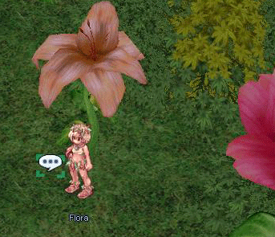

Par: Myllena
Description: Quête custom pour obtenir différents chapeaux fleuris: Hibiscus (5139), Flower Crown (5303), Laurel Crown (5185), Emperor Laurel Crown (5205).
Nota:
Nécessite la présence de l'Epicerie Tofeko et de ses items customs associés
Description étendue: La quête comporte deux parties: 1) récitation de poème 2) apporter des objets nécessaires à la création du chapeau.
Hibiscus: 1 Small Ribbons |
 |
|
Flower Crown: 1 Flower Band |
||
Laurel Crown: 1 Flower Band |
||
Emperor Laurel Crown: 1 Flower Band |